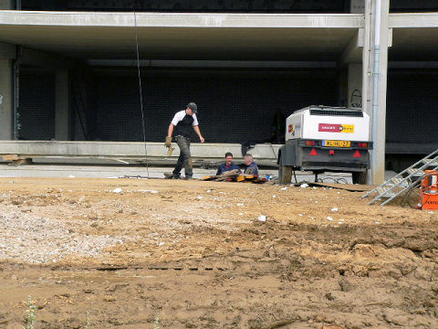
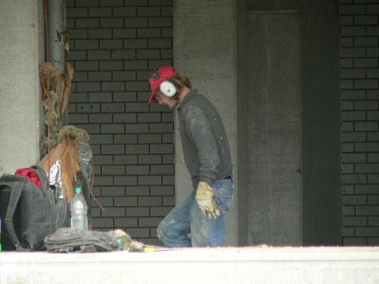
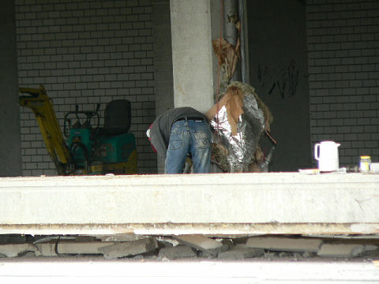
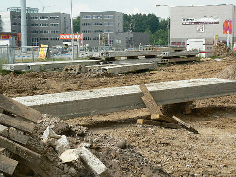
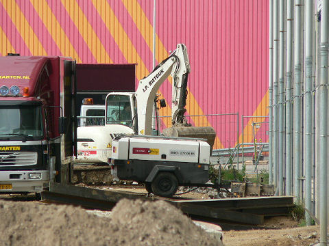
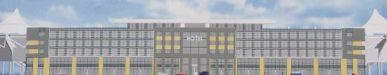

|
Zuidwerkzaamheden, 9 juli 2007
|

De bouwvakvakantie nadert maar de grondwerken zijn gestart op zuid.

Hier verrijst straks een wondermooi hotel van een strakke architectuur,
Roda-proof.

Over enkele maanden zijn ook de zuidgasten het uitzicht vanuit de omloop kwijt.

Overbodig beton.

In het verleden werd er doorgewerkt tijdens de bouwvakvakantie. Misschien gaat
dat
nu ook weer zo.

Zo moet het gaan uitzien!
© Koempels Pleasure Dome
|